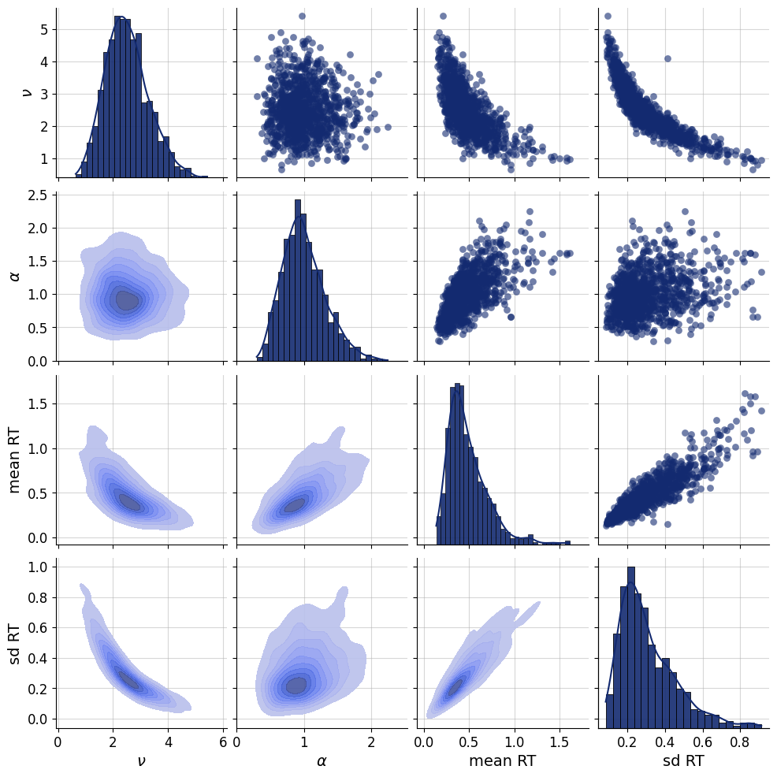
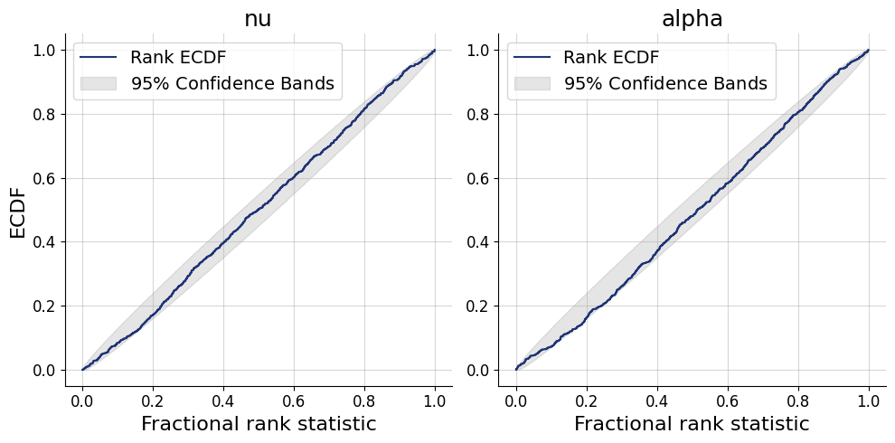
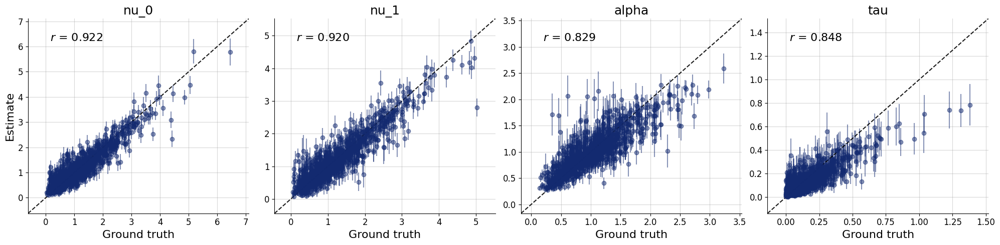

import os
os.environ["KERAS_BACKEND"] = "tensorflow"
import keras
import bayesflow as bf
import numpy as np
import pandas as pd
import matplotlib.pyplot as plt
from scipy import statsWald response times, Racing diffusion model
Diffusion models in BayesFlow
def evidence_accumulation(nu, max_t, dt):
timesteps = int(max_t / dt)
t = np.linspace(0, max_t, timesteps)
noise = np.random.normal(0, 1, size=timesteps) * np.sqrt(dt)
evidence = nu * t + np.cumsum(noise)
return t, evidence
t, evidence = evidence_accumulation(nu=2.5, max_t=1.0, dt=0.01)
plt.plot(t, evidence)
plt.xlabel("Time (s)")
plt.ylabel("Evidence")Text(0, 0.5, 'Evidence')
Simple response time (Wald model)
Here we will train a simple response time model based on a single accumulator that diffuses with a drift \(\nu\) to a decision threshold \(\alpha\). For more background about the Wald model, see Anders, Alario, & van Maanen (2016). Here we will estimate only the drift and decision threshold, no non-decision time or variability in starting point. In this case, the mean and a standard deviation of the response times are sufficient statistics, so we do not need a summary network.
def prior():
# drift rate
nu=np.random.gamma(shape=10, scale=0.25)
# decision threshold
alpha=np.random.gamma(shape=10, scale=0.1)
return dict(nu=nu, alpha=alpha)
# generate data for a single trial
def trial(nu, alpha, max_t, dt):
t, evidence = evidence_accumulation(nu, max_t, dt)
passage = np.argmax(evidence > alpha)
rt = max_t if passage==0 else t[passage]
return rt
# generate data for n trials
def likelihood(nu, alpha, n=250, max_t=3.0, dt=0.02):
rt = np.zeros(n)
for i in range(n):
rt[i] = trial(nu, alpha, max_t, dt)
return dict(rt=rt)
# sufficient statistics: mean, sd, n
def summary(rt):
return dict(
mean = np.mean(rt),
sd = np.std(rt)
)
simulator = bf.make_simulator([prior, likelihood, summary])df = simulator.sample(1_000)f=bf.diagnostics.pairs_samples(
df,
variable_keys=["nu", "alpha", "mean", "sd"],
variable_names=[r"$\nu$", r"$\alpha$", "mean RT", "sd RT"])
adapter = (bf.Adapter()
.constrain(["nu", "alpha"], lower=0)
.concatenate(["nu", "alpha"], into="inference_variables")
.concatenate(["mean", "sd"], into="inference_conditions")
.drop("rt")
)workflow = bf.BasicWorkflow(
simulator = simulator,
adapter = adapter,
inference_network = bf.networks.CouplingFlow(permutation="swap", subnet_kwargs=dict(dropout=False)),
inference_variables = ["nu", "alpha"],
inference_conditions = ["mean", "sd"]
)train_data = simulator.sample(5_000)
validation_data = simulator.sample(1_000)history=workflow.fit_offline(
data=train_data,
epochs=50,
batch_size=250,
validation_data=validation_data
)INFO:bayesflow:Fitting on dataset instance of OfflineDataset.
INFO:bayesflow:Building on a test batch.Epoch 1/50
20/20 ━━━━━━━━━━━━━━━━━━━━ 6s 31ms/step - loss: 4.3237 - loss/inference_loss: 4.3237 - val_loss: 3.2620 - val_loss/inference_loss: 3.2620
Epoch 2/50
20/20 ━━━━━━━━━━━━━━━━━━━━ 0s 9ms/step - loss: 2.9751 - loss/inference_loss: 2.9751 - val_loss: 2.6640 - val_loss/inference_loss: 2.6640
Epoch 3/50
20/20 ━━━━━━━━━━━━━━━━━━━━ 0s 9ms/step - loss: 2.5618 - loss/inference_loss: 2.5618 - val_loss: 2.4644 - val_loss/inference_loss: 2.4644
Epoch 4/50
20/20 ━━━━━━━━━━━━━━━━━━━━ 0s 10ms/step - loss: 2.3460 - loss/inference_loss: 2.3460 - val_loss: 2.2887 - val_loss/inference_loss: 2.2887
Epoch 5/50
20/20 ━━━━━━━━━━━━━━━━━━━━ 0s 10ms/step - loss: 2.1960 - loss/inference_loss: 2.1960 - val_loss: 2.0773 - val_loss/inference_loss: 2.0773
Epoch 6/50
20/20 ━━━━━━━━━━━━━━━━━━━━ 0s 12ms/step - loss: 2.0349 - loss/inference_loss: 2.0349 - val_loss: 1.9428 - val_loss/inference_loss: 1.9428
Epoch 7/50
20/20 ━━━━━━━━━━━━━━━━━━━━ 0s 12ms/step - loss: 1.8103 - loss/inference_loss: 1.8103 - val_loss: 1.6752 - val_loss/inference_loss: 1.6752
Epoch 8/50
20/20 ━━━━━━━━━━━━━━━━━━━━ 0s 12ms/step - loss: 1.4347 - loss/inference_loss: 1.4347 - val_loss: 1.0306 - val_loss/inference_loss: 1.0306
Epoch 9/50
20/20 ━━━━━━━━━━━━━━━━━━━━ 0s 12ms/step - loss: 0.6755 - loss/inference_loss: 0.6755 - val_loss: 0.1332 - val_loss/inference_loss: 0.1332
Epoch 10/50
20/20 ━━━━━━━━━━━━━━━━━━━━ 0s 12ms/step - loss: -0.0722 - loss/inference_loss: -0.0722 - val_loss: -0.5113 - val_loss/inference_loss: -0.5113
Epoch 11/50
20/20 ━━━━━━━━━━━━━━━━━━━━ 0s 12ms/step - loss: -0.6561 - loss/inference_loss: -0.6561 - val_loss: -0.9005 - val_loss/inference_loss: -0.9005
Epoch 12/50
20/20 ━━━━━━━━━━━━━━━━━━━━ 0s 12ms/step - loss: -0.9802 - loss/inference_loss: -0.9802 - val_loss: -1.0020 - val_loss/inference_loss: -1.0020
Epoch 13/50
20/20 ━━━━━━━━━━━━━━━━━━━━ 0s 12ms/step - loss: -1.0407 - loss/inference_loss: -1.0407 - val_loss: -1.1719 - val_loss/inference_loss: -1.1719
Epoch 14/50
20/20 ━━━━━━━━━━━━━━━━━━━━ 0s 12ms/step - loss: -1.0787 - loss/inference_loss: -1.0787 - val_loss: -1.0381 - val_loss/inference_loss: -1.0381
Epoch 15/50
20/20 ━━━━━━━━━━━━━━━━━━━━ 0s 13ms/step - loss: -1.0662 - loss/inference_loss: -1.0662 - val_loss: -1.1802 - val_loss/inference_loss: -1.1802
Epoch 16/50
20/20 ━━━━━━━━━━━━━━━━━━━━ 0s 12ms/step - loss: -1.1526 - loss/inference_loss: -1.1526 - val_loss: -1.1777 - val_loss/inference_loss: -1.1777
Epoch 17/50
20/20 ━━━━━━━━━━━━━━━━━━━━ 0s 12ms/step - loss: -1.1973 - loss/inference_loss: -1.1973 - val_loss: -1.3017 - val_loss/inference_loss: -1.3017
Epoch 18/50
20/20 ━━━━━━━━━━━━━━━━━━━━ 0s 12ms/step - loss: -1.2158 - loss/inference_loss: -1.2158 - val_loss: -1.1972 - val_loss/inference_loss: -1.1972
Epoch 19/50
20/20 ━━━━━━━━━━━━━━━━━━━━ 0s 15ms/step - loss: -1.2340 - loss/inference_loss: -1.2340 - val_loss: -1.1711 - val_loss/inference_loss: -1.1711
Epoch 20/50
20/20 ━━━━━━━━━━━━━━━━━━━━ 0s 16ms/step - loss: -1.2433 - loss/inference_loss: -1.2433 - val_loss: -1.3729 - val_loss/inference_loss: -1.3729
Epoch 21/50
20/20 ━━━━━━━━━━━━━━━━━━━━ 0s 16ms/step - loss: -1.2589 - loss/inference_loss: -1.2589 - val_loss: -1.2672 - val_loss/inference_loss: -1.2672
Epoch 22/50
20/20 ━━━━━━━━━━━━━━━━━━━━ 0s 16ms/step - loss: -1.2627 - loss/inference_loss: -1.2627 - val_loss: -1.1731 - val_loss/inference_loss: -1.1731
Epoch 23/50
20/20 ━━━━━━━━━━━━━━━━━━━━ 0s 16ms/step - loss: -1.2662 - loss/inference_loss: -1.2662 - val_loss: -1.2593 - val_loss/inference_loss: -1.2593
Epoch 24/50
20/20 ━━━━━━━━━━━━━━━━━━━━ 0s 18ms/step - loss: -1.2929 - loss/inference_loss: -1.2929 - val_loss: -1.3146 - val_loss/inference_loss: -1.3146
Epoch 25/50
20/20 ━━━━━━━━━━━━━━━━━━━━ 0s 16ms/step - loss: -1.2873 - loss/inference_loss: -1.2873 - val_loss: -1.1808 - val_loss/inference_loss: -1.1808
Epoch 26/50
20/20 ━━━━━━━━━━━━━━━━━━━━ 0s 13ms/step - loss: -1.2965 - loss/inference_loss: -1.2965 - val_loss: -1.2206 - val_loss/inference_loss: -1.2206
Epoch 27/50
20/20 ━━━━━━━━━━━━━━━━━━━━ 0s 17ms/step - loss: -1.2928 - loss/inference_loss: -1.2928 - val_loss: -1.2815 - val_loss/inference_loss: -1.2815
Epoch 28/50
20/20 ━━━━━━━━━━━━━━━━━━━━ 0s 16ms/step - loss: -1.3085 - loss/inference_loss: -1.3085 - val_loss: -1.2836 - val_loss/inference_loss: -1.2836
Epoch 29/50
20/20 ━━━━━━━━━━━━━━━━━━━━ 0s 16ms/step - loss: -1.3052 - loss/inference_loss: -1.3052 - val_loss: -1.3027 - val_loss/inference_loss: -1.3027
Epoch 30/50
20/20 ━━━━━━━━━━━━━━━━━━━━ 0s 16ms/step - loss: -1.3032 - loss/inference_loss: -1.3032 - val_loss: -1.3187 - val_loss/inference_loss: -1.3187
Epoch 31/50
20/20 ━━━━━━━━━━━━━━━━━━━━ 0s 15ms/step - loss: -1.3289 - loss/inference_loss: -1.3289 - val_loss: -1.3867 - val_loss/inference_loss: -1.3867
Epoch 32/50
20/20 ━━━━━━━━━━━━━━━━━━━━ 0s 16ms/step - loss: -1.3229 - loss/inference_loss: -1.3229 - val_loss: -1.3211 - val_loss/inference_loss: -1.3211
Epoch 33/50
20/20 ━━━━━━━━━━━━━━━━━━━━ 0s 15ms/step - loss: -1.3265 - loss/inference_loss: -1.3265 - val_loss: -1.3229 - val_loss/inference_loss: -1.3229
Epoch 34/50
20/20 ━━━━━━━━━━━━━━━━━━━━ 0s 15ms/step - loss: -1.3420 - loss/inference_loss: -1.3420 - val_loss: -1.4363 - val_loss/inference_loss: -1.4363
Epoch 35/50
20/20 ━━━━━━━━━━━━━━━━━━━━ 0s 15ms/step - loss: -1.3360 - loss/inference_loss: -1.3360 - val_loss: -1.3724 - val_loss/inference_loss: -1.3724
Epoch 36/50
20/20 ━━━━━━━━━━━━━━━━━━━━ 0s 14ms/step - loss: -1.3250 - loss/inference_loss: -1.3250 - val_loss: -1.4013 - val_loss/inference_loss: -1.4013
Epoch 37/50
20/20 ━━━━━━━━━━━━━━━━━━━━ 0s 15ms/step - loss: -1.3528 - loss/inference_loss: -1.3528 - val_loss: -1.4209 - val_loss/inference_loss: -1.4209
Epoch 38/50
20/20 ━━━━━━━━━━━━━━━━━━━━ 0s 15ms/step - loss: -1.3484 - loss/inference_loss: -1.3484 - val_loss: -1.3968 - val_loss/inference_loss: -1.3968
Epoch 39/50
20/20 ━━━━━━━━━━━━━━━━━━━━ 0s 15ms/step - loss: -1.3481 - loss/inference_loss: -1.3481 - val_loss: -1.3297 - val_loss/inference_loss: -1.3297
Epoch 40/50
20/20 ━━━━━━━━━━━━━━━━━━━━ 0s 15ms/step - loss: -1.3504 - loss/inference_loss: -1.3504 - val_loss: -1.4910 - val_loss/inference_loss: -1.4910
Epoch 41/50
20/20 ━━━━━━━━━━━━━━━━━━━━ 0s 15ms/step - loss: -1.3585 - loss/inference_loss: -1.3585 - val_loss: -1.2492 - val_loss/inference_loss: -1.2492
Epoch 42/50
20/20 ━━━━━━━━━━━━━━━━━━━━ 0s 17ms/step - loss: -1.3609 - loss/inference_loss: -1.3609 - val_loss: -1.3917 - val_loss/inference_loss: -1.3917
Epoch 43/50
20/20 ━━━━━━━━━━━━━━━━━━━━ 0s 15ms/step - loss: -1.3535 - loss/inference_loss: -1.3535 - val_loss: -1.3360 - val_loss/inference_loss: -1.3360
Epoch 44/50
20/20 ━━━━━━━━━━━━━━━━━━━━ 0s 15ms/step - loss: -1.3583 - loss/inference_loss: -1.3583 - val_loss: -1.3302 - val_loss/inference_loss: -1.3302
Epoch 45/50
20/20 ━━━━━━━━━━━━━━━━━━━━ 0s 15ms/step - loss: -1.3607 - loss/inference_loss: -1.3607 - val_loss: -1.3974 - val_loss/inference_loss: -1.3974
Epoch 46/50
20/20 ━━━━━━━━━━━━━━━━━━━━ 0s 15ms/step - loss: -1.3665 - loss/inference_loss: -1.3665 - val_loss: -1.3183 - val_loss/inference_loss: -1.3183
Epoch 47/50
20/20 ━━━━━━━━━━━━━━━━━━━━ 0s 15ms/step - loss: -1.3582 - loss/inference_loss: -1.3582 - val_loss: -1.2993 - val_loss/inference_loss: -1.2993
Epoch 48/50
20/20 ━━━━━━━━━━━━━━━━━━━━ 0s 15ms/step - loss: -1.3658 - loss/inference_loss: -1.3658 - val_loss: -1.2053 - val_loss/inference_loss: -1.2053
Epoch 49/50
20/20 ━━━━━━━━━━━━━━━━━━━━ 0s 17ms/step - loss: -1.3575 - loss/inference_loss: -1.3575 - val_loss: -1.3078 - val_loss/inference_loss: -1.3078
Epoch 50/50
20/20 ━━━━━━━━━━━━━━━━━━━━ 0s 16ms/step - loss: -1.3586 - loss/inference_loss: -1.3586 - val_loss: -1.3565 - val_loss/inference_loss: -1.3565test_data = simulator.sample(1_000)
plots=workflow.plot_default_diagnostics(test_data=test_data)



Two choice task (Racing diffusion model)
We’ll assume a simple RDM with two choice alternatives (Tillman et al., 2020).
Here we will simplify the model to include no bias, no variability in starting points. Instead of modeling one accumulator for each of [left, right] responses, we will simply model one accumulator for “incorrect” and one accumulator for “correct” response. This makes it a bit easier to simulate from (we do not need to simulate stimuli).
The model has four parameters: 2 drift rates (incorrect - \(\nu_0\), correct \(\nu_1\)), decision threshold \(\alpha\), and non-decision time \(\tau\).
def context(n=None):
if n is None:
n = np.random.randint(200, 351)
return dict(n=n)
def prior(nu=None, alpha=None, tau=None):
if nu is None:
nu=np.random.dirichlet([2, 2])
nu=np.random.gamma(shape=5, scale=0.5) * nu
if alpha is None:
alpha=np.random.gamma(shape=5, scale=0.2)
if tau is None:
tau=np.random.exponential(0.15)
else:
tau=tau.item()
return dict(nu=nu, alpha=alpha, tau=tau)
# generate data for a single trial
def trial(nu, alpha, tau, max_t, dt):
response = -1
min_t = max_t
# loop over accumulators
# if an accumulator has a smaller passage time than the current minimum
# save it as the fastest accumulator (response)
for resp, drift in enumerate(nu):
t, evidence = evidence_accumulation(drift, max_t, dt)
passage = np.argmax(evidence > alpha)
t = max_t if passage==0 else t[passage]
if t < min_t:
min_t = t
response = resp
return min_t+tau, response
# generate data for n trials
# keep the data.shape always to max_n
# the rest is filled with 0s
def likelihood(n, nu, alpha, tau, max_t=3.0, dt=0.02, max_n=350):
rt = np.zeros(max_n)
response = np.zeros(max_n)
observed = np.zeros(max_n)
for i in range(n):
result = trial(nu, alpha, tau, max_t, dt)
rt[i] = result[0]
response[i] = result[1]
observed[i] = 1
return dict(rt=rt, response=response, observed=observed)
simulator = bf.make_simulator([context, prior, likelihood])adapter = (bf.Adapter()
.as_set(["rt", "response", "observed"])
.constrain(["nu", "alpha", "tau"], lower=0)
.standardize(include="nu", mean= 0.7, std=1.2)
.standardize(include="alpha", mean= 0.5, std=0.7)
.standardize(include="tau", mean=-2.5, std=1.3)
.concatenate(["nu", "alpha", "tau"], into="inference_variables")
.concatenate(["rt", "response", "observed"], into="summary_variables")
.rename("n", "inference_conditions")
)workflow = bf.BasicWorkflow(
simulator = simulator,
adapter = adapter,
inference_network = bf.networks.CouplingFlow(
permutation="swap",
subnet_kwargs=dict(dropout=False)
),
summary_network=bf.networks.DeepSet(
base_distribution="normal",
dropout=False
),
inference_variables = ["nu", "alpha", "tau"],
inference_conditions = ["n"],
summary_variables = ["rt", "response", "observed"]
)train_data = simulator.sample(5_000)
validation_data = simulator.sample(1_000)history=workflow.fit_offline(
data=train_data,
epochs=100,
batch_size=250,
validation_data=validation_data
)INFO:bayesflow:Fitting on dataset instance of OfflineDataset.
INFO:bayesflow:Building on a test batch.Epoch 1/100
20/20 ━━━━━━━━━━━━━━━━━━━━ 34s 1s/step - loss: 14.3609 - loss/inference_loss: 14.0609 - loss/summary_loss: 0.3000 - val_loss: 6.1114 - val_loss/inference_loss: 5.9787 - val_loss/summary_loss: 0.1327
Epoch 2/100
20/20 ━━━━━━━━━━━━━━━━━━━━ 13s 633ms/step - loss: 5.8206 - loss/inference_loss: 5.6786 - loss/summary_loss: 0.1419 - val_loss: 5.5208 - val_loss/inference_loss: 5.3216 - val_loss/summary_loss: 0.1992
Epoch 3/100
20/20 ━━━━━━━━━━━━━━━━━━━━ 13s 645ms/step - loss: 5.2590 - loss/inference_loss: 5.0502 - loss/summary_loss: 0.2088 - val_loss: 5.1275 - val_loss/inference_loss: 4.9059 - val_loss/summary_loss: 0.2216
Epoch 4/100
20/20 ━━━━━━━━━━━━━━━━━━━━ 13s 649ms/step - loss: 4.7636 - loss/inference_loss: 4.5833 - loss/summary_loss: 0.1803 - val_loss: 4.5547 - val_loss/inference_loss: 4.4057 - val_loss/summary_loss: 0.1490
Epoch 5/100
20/20 ━━━━━━━━━━━━━━━━━━━━ 12s 607ms/step - loss: 4.4397 - loss/inference_loss: 4.2925 - loss/summary_loss: 0.1471 - val_loss: 4.3656 - val_loss/inference_loss: 4.2313 - val_loss/summary_loss: 0.1344
Epoch 6/100
20/20 ━━━━━━━━━━━━━━━━━━━━ 12s 604ms/step - loss: 4.3418 - loss/inference_loss: 4.1914 - loss/summary_loss: 0.1504 - val_loss: 4.1845 - val_loss/inference_loss: 4.0441 - val_loss/summary_loss: 0.1405
Epoch 7/100
20/20 ━━━━━━━━━━━━━━━━━━━━ 12s 605ms/step - loss: 4.3237 - loss/inference_loss: 4.1712 - loss/summary_loss: 0.1525 - val_loss: 4.3240 - val_loss/inference_loss: 4.1473 - val_loss/summary_loss: 0.1767
Epoch 8/100
20/20 ━━━━━━━━━━━━━━━━━━━━ 12s 613ms/step - loss: 4.1682 - loss/inference_loss: 4.0072 - loss/summary_loss: 0.1610 - val_loss: 3.9488 - val_loss/inference_loss: 3.8090 - val_loss/summary_loss: 0.1398
Epoch 9/100
20/20 ━━━━━━━━━━━━━━━━━━━━ 12s 607ms/step - loss: 3.9366 - loss/inference_loss: 3.7888 - loss/summary_loss: 0.1479 - val_loss: 4.2893 - val_loss/inference_loss: 4.1522 - val_loss/summary_loss: 0.1371
Epoch 10/100
20/20 ━━━━━━━━━━━━━━━━━━━━ 12s 607ms/step - loss: 3.8633 - loss/inference_loss: 3.7098 - loss/summary_loss: 0.1535 - val_loss: 4.0335 - val_loss/inference_loss: 3.9091 - val_loss/summary_loss: 0.1245
Epoch 11/100
20/20 ━━━━━━━━━━━━━━━━━━━━ 12s 607ms/step - loss: 3.7262 - loss/inference_loss: 3.5701 - loss/summary_loss: 0.1562 - val_loss: 3.7161 - val_loss/inference_loss: 3.5764 - val_loss/summary_loss: 0.1397
Epoch 12/100
20/20 ━━━━━━━━━━━━━━━━━━━━ 12s 609ms/step - loss: 3.6239 - loss/inference_loss: 3.4630 - loss/summary_loss: 0.1610 - val_loss: 3.5772 - val_loss/inference_loss: 3.4350 - val_loss/summary_loss: 0.1422
Epoch 13/100
20/20 ━━━━━━━━━━━━━━━━━━━━ 12s 622ms/step - loss: 3.4660 - loss/inference_loss: 3.2979 - loss/summary_loss: 0.1681 - val_loss: 3.2676 - val_loss/inference_loss: 3.1305 - val_loss/summary_loss: 0.1371
Epoch 14/100
20/20 ━━━━━━━━━━━━━━━━━━━━ 12s 622ms/step - loss: 3.4642 - loss/inference_loss: 3.3057 - loss/summary_loss: 0.1586 - val_loss: 3.6891 - val_loss/inference_loss: 3.5483 - val_loss/summary_loss: 0.1408
Epoch 15/100
20/20 ━━━━━━━━━━━━━━━━━━━━ 12s 612ms/step - loss: 3.3781 - loss/inference_loss: 3.2192 - loss/summary_loss: 0.1588 - val_loss: 3.4303 - val_loss/inference_loss: 3.2832 - val_loss/summary_loss: 0.1471
Epoch 16/100
20/20 ━━━━━━━━━━━━━━━━━━━━ 12s 607ms/step - loss: 3.1897 - loss/inference_loss: 3.0271 - loss/summary_loss: 0.1626 - val_loss: 3.6857 - val_loss/inference_loss: 3.5336 - val_loss/summary_loss: 0.1521
Epoch 17/100
20/20 ━━━━━━━━━━━━━━━━━━━━ 12s 611ms/step - loss: 3.1959 - loss/inference_loss: 3.0351 - loss/summary_loss: 0.1608 - val_loss: 3.4023 - val_loss/inference_loss: 3.2598 - val_loss/summary_loss: 0.1426
Epoch 18/100
20/20 ━━━━━━━━━━━━━━━━━━━━ 12s 624ms/step - loss: 3.0804 - loss/inference_loss: 2.9221 - loss/summary_loss: 0.1583 - val_loss: 2.8908 - val_loss/inference_loss: 2.7297 - val_loss/summary_loss: 0.1611
Epoch 19/100
20/20 ━━━━━━━━━━━━━━━━━━━━ 12s 618ms/step - loss: 3.0177 - loss/inference_loss: 2.8528 - loss/summary_loss: 0.1649 - val_loss: 3.3557 - val_loss/inference_loss: 3.1970 - val_loss/summary_loss: 0.1587
Epoch 20/100
20/20 ━━━━━━━━━━━━━━━━━━━━ 12s 620ms/step - loss: 2.9631 - loss/inference_loss: 2.7981 - loss/summary_loss: 0.1650 - val_loss: 3.7985 - val_loss/inference_loss: 3.6307 - val_loss/summary_loss: 0.1678
Epoch 21/100
20/20 ━━━━━━━━━━━━━━━━━━━━ 12s 606ms/step - loss: 2.9434 - loss/inference_loss: 2.7783 - loss/summary_loss: 0.1652 - val_loss: 2.8577 - val_loss/inference_loss: 2.7084 - val_loss/summary_loss: 0.1493
Epoch 22/100
20/20 ━━━━━━━━━━━━━━━━━━━━ 12s 618ms/step - loss: 2.9067 - loss/inference_loss: 2.7405 - loss/summary_loss: 0.1662 - val_loss: 3.5980 - val_loss/inference_loss: 3.4340 - val_loss/summary_loss: 0.1640
Epoch 23/100
20/20 ━━━━━━━━━━━━━━━━━━━━ 13s 664ms/step - loss: 2.9271 - loss/inference_loss: 2.7585 - loss/summary_loss: 0.1686 - val_loss: 3.5134 - val_loss/inference_loss: 3.3457 - val_loss/summary_loss: 0.1677
Epoch 24/100
20/20 ━━━━━━━━━━━━━━━━━━━━ 13s 666ms/step - loss: 2.8916 - loss/inference_loss: 2.7192 - loss/summary_loss: 0.1724 - val_loss: 2.5384 - val_loss/inference_loss: 2.3735 - val_loss/summary_loss: 0.1649
Epoch 25/100
20/20 ━━━━━━━━━━━━━━━━━━━━ 13s 655ms/step - loss: 2.6834 - loss/inference_loss: 2.5162 - loss/summary_loss: 0.1673 - val_loss: 2.9493 - val_loss/inference_loss: 2.7742 - val_loss/summary_loss: 0.1752
Epoch 26/100
20/20 ━━━━━━━━━━━━━━━━━━━━ 13s 663ms/step - loss: 2.7069 - loss/inference_loss: 2.5339 - loss/summary_loss: 0.1729 - val_loss: 2.7834 - val_loss/inference_loss: 2.6410 - val_loss/summary_loss: 0.1424
Epoch 27/100
20/20 ━━━━━━━━━━━━━━━━━━━━ 13s 631ms/step - loss: 2.7247 - loss/inference_loss: 2.5504 - loss/summary_loss: 0.1743 - val_loss: 2.7583 - val_loss/inference_loss: 2.6091 - val_loss/summary_loss: 0.1491
Epoch 28/100
20/20 ━━━━━━━━━━━━━━━━━━━━ 13s 655ms/step - loss: 3.0438 - loss/inference_loss: 2.8668 - loss/summary_loss: 0.1770 - val_loss: 2.7321 - val_loss/inference_loss: 2.5490 - val_loss/summary_loss: 0.1831
Epoch 29/100
20/20 ━━━━━━━━━━━━━━━━━━━━ 13s 646ms/step - loss: 3.3625 - loss/inference_loss: 3.1734 - loss/summary_loss: 0.1891 - val_loss: 3.2479 - val_loss/inference_loss: 3.0610 - val_loss/summary_loss: 0.1869
Epoch 30/100
20/20 ━━━━━━━━━━━━━━━━━━━━ 13s 644ms/step - loss: 2.8979 - loss/inference_loss: 2.7022 - loss/summary_loss: 0.1956 - val_loss: 3.0476 - val_loss/inference_loss: 2.8501 - val_loss/summary_loss: 0.1975
Epoch 31/100
20/20 ━━━━━━━━━━━━━━━━━━━━ 13s 642ms/step - loss: 2.8198 - loss/inference_loss: 2.6258 - loss/summary_loss: 0.1939 - val_loss: 2.5580 - val_loss/inference_loss: 2.3881 - val_loss/summary_loss: 0.1699
Epoch 32/100
20/20 ━━━━━━━━━━━━━━━━━━━━ 13s 652ms/step - loss: 2.6621 - loss/inference_loss: 2.4773 - loss/summary_loss: 0.1847 - val_loss: 2.7204 - val_loss/inference_loss: 2.5579 - val_loss/summary_loss: 0.1626
Epoch 33/100
20/20 ━━━━━━━━━━━━━━━━━━━━ 13s 641ms/step - loss: 2.3376 - loss/inference_loss: 2.1612 - loss/summary_loss: 0.1764 - val_loss: 2.3137 - val_loss/inference_loss: 2.1466 - val_loss/summary_loss: 0.1671
Epoch 34/100
20/20 ━━━━━━━━━━━━━━━━━━━━ 13s 640ms/step - loss: 2.3064 - loss/inference_loss: 2.1392 - loss/summary_loss: 0.1671 - val_loss: 2.1724 - val_loss/inference_loss: 2.0077 - val_loss/summary_loss: 0.1647
Epoch 35/100
20/20 ━━━━━━━━━━━━━━━━━━━━ 13s 638ms/step - loss: 2.6591 - loss/inference_loss: 2.4902 - loss/summary_loss: 0.1689 - val_loss: 2.8983 - val_loss/inference_loss: 2.7284 - val_loss/summary_loss: 0.1699
Epoch 36/100
20/20 ━━━━━━━━━━━━━━━━━━━━ 13s 644ms/step - loss: 2.2897 - loss/inference_loss: 2.0997 - loss/summary_loss: 0.1900 - val_loss: 2.1468 - val_loss/inference_loss: 1.9434 - val_loss/summary_loss: 0.2034
Epoch 37/100
20/20 ━━━━━━━━━━━━━━━━━━━━ 13s 672ms/step - loss: 2.3447 - loss/inference_loss: 2.1427 - loss/summary_loss: 0.2020 - val_loss: 2.2293 - val_loss/inference_loss: 2.0126 - val_loss/summary_loss: 0.2167
Epoch 38/100
20/20 ━━━━━━━━━━━━━━━━━━━━ 13s 650ms/step - loss: 2.1639 - loss/inference_loss: 1.9669 - loss/summary_loss: 0.1970 - val_loss: 2.2016 - val_loss/inference_loss: 2.0265 - val_loss/summary_loss: 0.1751
Epoch 39/100
20/20 ━━━━━━━━━━━━━━━━━━━━ 13s 631ms/step - loss: 1.9992 - loss/inference_loss: 1.8057 - loss/summary_loss: 0.1936 - val_loss: 1.9904 - val_loss/inference_loss: 1.8133 - val_loss/summary_loss: 0.1771
Epoch 40/100
20/20 ━━━━━━━━━━━━━━━━━━━━ 13s 637ms/step - loss: 1.8934 - loss/inference_loss: 1.7005 - loss/summary_loss: 0.1929 - val_loss: 2.1794 - val_loss/inference_loss: 2.0040 - val_loss/summary_loss: 0.1755
Epoch 41/100
20/20 ━━━━━━━━━━━━━━━━━━━━ 13s 638ms/step - loss: 1.8562 - loss/inference_loss: 1.6690 - loss/summary_loss: 0.1872 - val_loss: 1.9737 - val_loss/inference_loss: 1.7985 - val_loss/summary_loss: 0.1752
Epoch 42/100
20/20 ━━━━━━━━━━━━━━━━━━━━ 13s 632ms/step - loss: 1.7466 - loss/inference_loss: 1.5612 - loss/summary_loss: 0.1854 - val_loss: 2.0639 - val_loss/inference_loss: 1.8752 - val_loss/summary_loss: 0.1887
Epoch 43/100
20/20 ━━━━━━━━━━━━━━━━━━━━ 13s 648ms/step - loss: 1.7693 - loss/inference_loss: 1.5840 - loss/summary_loss: 0.1853 - val_loss: 2.5070 - val_loss/inference_loss: 2.3081 - val_loss/summary_loss: 0.1989
Epoch 44/100
20/20 ━━━━━━━━━━━━━━━━━━━━ 13s 674ms/step - loss: 1.7723 - loss/inference_loss: 1.5713 - loss/summary_loss: 0.2011 - val_loss: 1.9744 - val_loss/inference_loss: 1.7753 - val_loss/summary_loss: 0.1991
Epoch 45/100
20/20 ━━━━━━━━━━━━━━━━━━━━ 13s 634ms/step - loss: 1.6406 - loss/inference_loss: 1.4498 - loss/summary_loss: 0.1909 - val_loss: 1.7236 - val_loss/inference_loss: 1.5469 - val_loss/summary_loss: 0.1768
Epoch 46/100
20/20 ━━━━━━━━━━━━━━━━━━━━ 13s 638ms/step - loss: 1.6229 - loss/inference_loss: 1.4347 - loss/summary_loss: 0.1882 - val_loss: 1.7695 - val_loss/inference_loss: 1.5858 - val_loss/summary_loss: 0.1838
Epoch 47/100
20/20 ━━━━━━━━━━━━━━━━━━━━ 13s 635ms/step - loss: 1.9651 - loss/inference_loss: 1.7786 - loss/summary_loss: 0.1865 - val_loss: 2.2095 - val_loss/inference_loss: 2.0418 - val_loss/summary_loss: 0.1676
Epoch 48/100
20/20 ━━━━━━━━━━━━━━━━━━━━ 13s 638ms/step - loss: 1.7954 - loss/inference_loss: 1.6079 - loss/summary_loss: 0.1875 - val_loss: 1.7250 - val_loss/inference_loss: 1.5349 - val_loss/summary_loss: 0.1901
Epoch 49/100
20/20 ━━━━━━━━━━━━━━━━━━━━ 13s 640ms/step - loss: 1.4650 - loss/inference_loss: 1.2654 - loss/summary_loss: 0.1996 - val_loss: 1.5375 - val_loss/inference_loss: 1.3673 - val_loss/summary_loss: 0.1703
Epoch 50/100
20/20 ━━━━━━━━━━━━━━━━━━━━ 13s 644ms/step - loss: 1.4561 - loss/inference_loss: 1.2723 - loss/summary_loss: 0.1838 - val_loss: 1.3710 - val_loss/inference_loss: 1.2069 - val_loss/summary_loss: 0.1641
Epoch 51/100
20/20 ━━━━━━━━━━━━━━━━━━━━ 13s 652ms/step - loss: 1.3965 - loss/inference_loss: 1.2208 - loss/summary_loss: 0.1757 - val_loss: 1.6446 - val_loss/inference_loss: 1.4805 - val_loss/summary_loss: 0.1641
Epoch 52/100
20/20 ━━━━━━━━━━━━━━━━━━━━ 13s 647ms/step - loss: 1.5803 - loss/inference_loss: 1.4120 - loss/summary_loss: 0.1683 - val_loss: 2.0261 - val_loss/inference_loss: 1.8793 - val_loss/summary_loss: 0.1468
Epoch 53/100
20/20 ━━━━━━━━━━━━━━━━━━━━ 13s 646ms/step - loss: 1.4886 - loss/inference_loss: 1.3165 - loss/summary_loss: 0.1721 - val_loss: 1.4217 - val_loss/inference_loss: 1.2650 - val_loss/summary_loss: 0.1567
Epoch 54/100
20/20 ━━━━━━━━━━━━━━━━━━━━ 13s 649ms/step - loss: 1.3557 - loss/inference_loss: 1.1763 - loss/summary_loss: 0.1794 - val_loss: 1.1852 - val_loss/inference_loss: 1.0335 - val_loss/summary_loss: 0.1517
Epoch 55/100
20/20 ━━━━━━━━━━━━━━━━━━━━ 13s 647ms/step - loss: 1.3222 - loss/inference_loss: 1.1358 - loss/summary_loss: 0.1863 - val_loss: 1.4570 - val_loss/inference_loss: 1.2818 - val_loss/summary_loss: 0.1752
Epoch 56/100
20/20 ━━━━━━━━━━━━━━━━━━━━ 13s 651ms/step - loss: 1.2665 - loss/inference_loss: 1.0845 - loss/summary_loss: 0.1819 - val_loss: 1.3704 - val_loss/inference_loss: 1.2134 - val_loss/summary_loss: 0.1570
Epoch 57/100
20/20 ━━━━━━━━━━━━━━━━━━━━ 13s 650ms/step - loss: 1.1603 - loss/inference_loss: 0.9831 - loss/summary_loss: 0.1771 - val_loss: 1.2693 - val_loss/inference_loss: 1.1043 - val_loss/summary_loss: 0.1650
Epoch 58/100
20/20 ━━━━━━━━━━━━━━━━━━━━ 13s 667ms/step - loss: 1.1930 - loss/inference_loss: 1.0246 - loss/summary_loss: 0.1684 - val_loss: 1.1312 - val_loss/inference_loss: 0.9607 - val_loss/summary_loss: 0.1705
Epoch 59/100
20/20 ━━━━━━━━━━━━━━━━━━━━ 13s 646ms/step - loss: 1.3012 - loss/inference_loss: 1.1337 - loss/summary_loss: 0.1675 - val_loss: 0.9646 - val_loss/inference_loss: 0.8219 - val_loss/summary_loss: 0.1427
Epoch 60/100
20/20 ━━━━━━━━━━━━━━━━━━━━ 13s 638ms/step - loss: 1.1655 - loss/inference_loss: 0.9962 - loss/summary_loss: 0.1692 - val_loss: 1.2670 - val_loss/inference_loss: 1.1023 - val_loss/summary_loss: 0.1647
Epoch 61/100
20/20 ━━━━━━━━━━━━━━━━━━━━ 13s 642ms/step - loss: 1.0884 - loss/inference_loss: 0.9162 - loss/summary_loss: 0.1722 - val_loss: 1.0760 - val_loss/inference_loss: 0.9093 - val_loss/summary_loss: 0.1666
Epoch 62/100
20/20 ━━━━━━━━━━━━━━━━━━━━ 13s 644ms/step - loss: 1.0608 - loss/inference_loss: 0.8926 - loss/summary_loss: 0.1682 - val_loss: 1.2358 - val_loss/inference_loss: 1.0848 - val_loss/summary_loss: 0.1510
Epoch 63/100
20/20 ━━━━━━━━━━━━━━━━━━━━ 13s 645ms/step - loss: 0.9816 - loss/inference_loss: 0.8134 - loss/summary_loss: 0.1682 - val_loss: 1.1988 - val_loss/inference_loss: 1.0484 - val_loss/summary_loss: 0.1503
Epoch 64/100
20/20 ━━━━━━━━━━━━━━━━━━━━ 13s 652ms/step - loss: 0.9914 - loss/inference_loss: 0.8276 - loss/summary_loss: 0.1638 - val_loss: 1.1647 - val_loss/inference_loss: 1.0099 - val_loss/summary_loss: 0.1549
Epoch 65/100
20/20 ━━━━━━━━━━━━━━━━━━━━ 13s 663ms/step - loss: 0.9703 - loss/inference_loss: 0.8106 - loss/summary_loss: 0.1597 - val_loss: 1.0473 - val_loss/inference_loss: 0.8970 - val_loss/summary_loss: 0.1503
Epoch 66/100
20/20 ━━━━━━━━━━━━━━━━━━━━ 13s 649ms/step - loss: 0.9324 - loss/inference_loss: 0.7728 - loss/summary_loss: 0.1596 - val_loss: 1.1476 - val_loss/inference_loss: 0.9971 - val_loss/summary_loss: 0.1505
Epoch 67/100
20/20 ━━━━━━━━━━━━━━━━━━━━ 13s 646ms/step - loss: 0.9491 - loss/inference_loss: 0.7905 - loss/summary_loss: 0.1585 - val_loss: 0.9906 - val_loss/inference_loss: 0.8568 - val_loss/summary_loss: 0.1338
Epoch 68/100
20/20 ━━━━━━━━━━━━━━━━━━━━ 13s 645ms/step - loss: 0.9203 - loss/inference_loss: 0.7623 - loss/summary_loss: 0.1580 - val_loss: 0.8555 - val_loss/inference_loss: 0.7052 - val_loss/summary_loss: 0.1503
Epoch 69/100
20/20 ━━━━━━━━━━━━━━━━━━━━ 13s 647ms/step - loss: 0.9002 - loss/inference_loss: 0.7434 - loss/summary_loss: 0.1567 - val_loss: 0.9529 - val_loss/inference_loss: 0.7949 - val_loss/summary_loss: 0.1580
Epoch 70/100
20/20 ━━━━━━━━━━━━━━━━━━━━ 13s 642ms/step - loss: 0.8696 - loss/inference_loss: 0.7143 - loss/summary_loss: 0.1553 - val_loss: 1.0420 - val_loss/inference_loss: 0.8976 - val_loss/summary_loss: 0.1444
Epoch 71/100
20/20 ━━━━━━━━━━━━━━━━━━━━ 13s 635ms/step - loss: 0.8365 - loss/inference_loss: 0.6796 - loss/summary_loss: 0.1569 - val_loss: 0.7756 - val_loss/inference_loss: 0.6244 - val_loss/summary_loss: 0.1512
Epoch 72/100
20/20 ━━━━━━━━━━━━━━━━━━━━ 13s 641ms/step - loss: 0.7884 - loss/inference_loss: 0.6326 - loss/summary_loss: 0.1558 - val_loss: 0.9432 - val_loss/inference_loss: 0.8026 - val_loss/summary_loss: 0.1406
Epoch 73/100
20/20 ━━━━━━━━━━━━━━━━━━━━ 13s 654ms/step - loss: 0.8110 - loss/inference_loss: 0.6554 - loss/summary_loss: 0.1556 - val_loss: 1.2307 - val_loss/inference_loss: 1.0674 - val_loss/summary_loss: 0.1633
Epoch 74/100
20/20 ━━━━━━━━━━━━━━━━━━━━ 13s 645ms/step - loss: 0.8237 - loss/inference_loss: 0.6710 - loss/summary_loss: 0.1527 - val_loss: 1.0769 - val_loss/inference_loss: 0.9334 - val_loss/summary_loss: 0.1435
Epoch 75/100
20/20 ━━━━━━━━━━━━━━━━━━━━ 13s 640ms/step - loss: 0.7520 - loss/inference_loss: 0.6001 - loss/summary_loss: 0.1519 - val_loss: 0.5952 - val_loss/inference_loss: 0.4440 - val_loss/summary_loss: 0.1512
Epoch 76/100
20/20 ━━━━━━━━━━━━━━━━━━━━ 13s 638ms/step - loss: 0.7704 - loss/inference_loss: 0.6198 - loss/summary_loss: 0.1506 - val_loss: 1.0217 - val_loss/inference_loss: 0.8737 - val_loss/summary_loss: 0.1481
Epoch 77/100
20/20 ━━━━━━━━━━━━━━━━━━━━ 13s 633ms/step - loss: 0.8600 - loss/inference_loss: 0.7117 - loss/summary_loss: 0.1483 - val_loss: 0.8531 - val_loss/inference_loss: 0.7029 - val_loss/summary_loss: 0.1502
Epoch 78/100
20/20 ━━━━━━━━━━━━━━━━━━━━ 13s 646ms/step - loss: 0.7354 - loss/inference_loss: 0.5853 - loss/summary_loss: 0.1500 - val_loss: 0.8464 - val_loss/inference_loss: 0.6999 - val_loss/summary_loss: 0.1465
Epoch 79/100
20/20 ━━━━━━━━━━━━━━━━━━━━ 13s 656ms/step - loss: 0.6935 - loss/inference_loss: 0.5461 - loss/summary_loss: 0.1474 - val_loss: 1.1493 - val_loss/inference_loss: 1.0016 - val_loss/summary_loss: 0.1477
Epoch 80/100
20/20 ━━━━━━━━━━━━━━━━━━━━ 13s 640ms/step - loss: 0.6776 - loss/inference_loss: 0.5293 - loss/summary_loss: 0.1483 - val_loss: 0.8535 - val_loss/inference_loss: 0.7131 - val_loss/summary_loss: 0.1404
Epoch 81/100
20/20 ━━━━━━━━━━━━━━━━━━━━ 13s 641ms/step - loss: 0.6657 - loss/inference_loss: 0.5185 - loss/summary_loss: 0.1471 - val_loss: 0.6595 - val_loss/inference_loss: 0.5300 - val_loss/summary_loss: 0.1295
Epoch 82/100
20/20 ━━━━━━━━━━━━━━━━━━━━ 13s 655ms/step - loss: 0.6525 - loss/inference_loss: 0.5066 - loss/summary_loss: 0.1459 - val_loss: 0.8119 - val_loss/inference_loss: 0.6816 - val_loss/summary_loss: 0.1303
Epoch 83/100
20/20 ━━━━━━━━━━━━━━━━━━━━ 13s 652ms/step - loss: 0.6473 - loss/inference_loss: 0.5016 - loss/summary_loss: 0.1457 - val_loss: 1.1176 - val_loss/inference_loss: 0.9759 - val_loss/summary_loss: 0.1417
Epoch 84/100
20/20 ━━━━━━━━━━━━━━━━━━━━ 13s 651ms/step - loss: 0.6252 - loss/inference_loss: 0.4787 - loss/summary_loss: 0.1464 - val_loss: 0.9897 - val_loss/inference_loss: 0.8482 - val_loss/summary_loss: 0.1415
Epoch 85/100
20/20 ━━━━━━━━━━━━━━━━━━━━ 13s 648ms/step - loss: 0.6253 - loss/inference_loss: 0.4791 - loss/summary_loss: 0.1461 - val_loss: 0.9309 - val_loss/inference_loss: 0.7894 - val_loss/summary_loss: 0.1415
Epoch 86/100
20/20 ━━━━━━━━━━━━━━━━━━━━ 13s 653ms/step - loss: 0.6400 - loss/inference_loss: 0.4954 - loss/summary_loss: 0.1446 - val_loss: 0.7634 - val_loss/inference_loss: 0.6060 - val_loss/summary_loss: 0.1574
Epoch 87/100
20/20 ━━━━━━━━━━━━━━━━━━━━ 13s 634ms/step - loss: 0.6005 - loss/inference_loss: 0.4567 - loss/summary_loss: 0.1438 - val_loss: 0.9929 - val_loss/inference_loss: 0.8591 - val_loss/summary_loss: 0.1337
Epoch 88/100
20/20 ━━━━━━━━━━━━━━━━━━━━ 13s 644ms/step - loss: 0.5821 - loss/inference_loss: 0.4381 - loss/summary_loss: 0.1440 - val_loss: 0.7725 - val_loss/inference_loss: 0.6350 - val_loss/summary_loss: 0.1375
Epoch 89/100
20/20 ━━━━━━━━━━━━━━━━━━━━ 13s 656ms/step - loss: 0.5848 - loss/inference_loss: 0.4408 - loss/summary_loss: 0.1440 - val_loss: 0.7279 - val_loss/inference_loss: 0.5971 - val_loss/summary_loss: 0.1309
Epoch 90/100
20/20 ━━━━━━━━━━━━━━━━━━━━ 13s 654ms/step - loss: 0.5676 - loss/inference_loss: 0.4243 - loss/summary_loss: 0.1433 - val_loss: 0.4774 - val_loss/inference_loss: 0.3479 - val_loss/summary_loss: 0.1295
Epoch 91/100
20/20 ━━━━━━━━━━━━━━━━━━━━ 13s 650ms/step - loss: 0.5667 - loss/inference_loss: 0.4229 - loss/summary_loss: 0.1438 - val_loss: 0.8972 - val_loss/inference_loss: 0.7705 - val_loss/summary_loss: 0.1267
Epoch 92/100
20/20 ━━━━━━━━━━━━━━━━━━━━ 13s 644ms/step - loss: 0.5633 - loss/inference_loss: 0.4198 - loss/summary_loss: 0.1435 - val_loss: 0.5660 - val_loss/inference_loss: 0.4268 - val_loss/summary_loss: 0.1392
Epoch 93/100
20/20 ━━━━━━━━━━━━━━━━━━━━ 13s 651ms/step - loss: 0.5625 - loss/inference_loss: 0.4200 - loss/summary_loss: 0.1425 - val_loss: 0.8851 - val_loss/inference_loss: 0.7444 - val_loss/summary_loss: 0.1407
Epoch 94/100
20/20 ━━━━━━━━━━━━━━━━━━━━ 13s 653ms/step - loss: 0.5464 - loss/inference_loss: 0.4034 - loss/summary_loss: 0.1429 - val_loss: 0.7550 - val_loss/inference_loss: 0.6080 - val_loss/summary_loss: 0.1470
Epoch 95/100
20/20 ━━━━━━━━━━━━━━━━━━━━ 13s 659ms/step - loss: 0.5542 - loss/inference_loss: 0.4115 - loss/summary_loss: 0.1427 - val_loss: 1.0188 - val_loss/inference_loss: 0.8732 - val_loss/summary_loss: 0.1456
Epoch 96/100
20/20 ━━━━━━━━━━━━━━━━━━━━ 13s 651ms/step - loss: 0.5547 - loss/inference_loss: 0.4116 - loss/summary_loss: 0.1431 - val_loss: 0.7003 - val_loss/inference_loss: 0.5620 - val_loss/summary_loss: 0.1383
Epoch 97/100
20/20 ━━━━━━━━━━━━━━━━━━━━ 13s 650ms/step - loss: 0.5643 - loss/inference_loss: 0.4210 - loss/summary_loss: 0.1432 - val_loss: 0.5191 - val_loss/inference_loss: 0.3852 - val_loss/summary_loss: 0.1339
Epoch 98/100
20/20 ━━━━━━━━━━━━━━━━━━━━ 13s 633ms/step - loss: 0.5524 - loss/inference_loss: 0.4096 - loss/summary_loss: 0.1428 - val_loss: 0.7010 - val_loss/inference_loss: 0.5694 - val_loss/summary_loss: 0.1316
Epoch 99/100
20/20 ━━━━━━━━━━━━━━━━━━━━ 13s 640ms/step - loss: 0.5481 - loss/inference_loss: 0.4046 - loss/summary_loss: 0.1436 - val_loss: 0.8737 - val_loss/inference_loss: 0.7477 - val_loss/summary_loss: 0.1261
Epoch 100/100
20/20 ━━━━━━━━━━━━━━━━━━━━ 13s 637ms/step - loss: 0.5406 - loss/inference_loss: 0.3977 - loss/summary_loss: 0.1429 - val_loss: 0.6171 - val_loss/inference_loss: 0.4793 - val_loss/summary_loss: 0.1378test_data = simulator.sample(1_000)
plots=workflow.plot_default_diagnostics(test_data=test_data)



Application to real data
Here we will work with data from Fortmann, et al. (2008), that is also included in the R package EMC2 (Stevenson, Donzallaz, & Heathcote, 2025). Here we use a slightly reshaped dataset where each combination of subject x condition is extended to a length of 350 trials (the missing trials are filled with 0s). This allows us to estimate the posterior for each subject in each condition with a single pass through the posterior approximator.
data_inference = pd.read_csv("forstmann.csv")data_inference['condition'].unique()array(['accuracy', 'speed', 'neutral'], dtype=object)data_inference_grouped = data_inference.groupby(["subject", "condition"])data_inference_dict = {
key: np.array([group[key].values.reshape(350, 1) for _, group in data_inference_grouped])
for key in ['rt', 'response', 'observed']}
data_inference_dict["n"] = np.sum(data_inference_dict["observed"], axis=1)
print({key: value.shape for key, value in data_inference_dict.items()}){'rt': (57, 350, 1), 'response': (57, 350, 1), 'observed': (57, 350, 1), 'n': (57, 1)}posterior_samples = workflow.sample(conditions=data_inference_dict, num_samples=1_000)# pick the first participant, first condition
posterior = {key: value[0] for key, value in posterior_samples.items()}
data = data_inference_grouped.get_group(('as1t', 'accuracy'))f=bf.diagnostics.pairs_posterior(estimates=posterior)def ecdf(rt, response, observed, **kwargs):
observed_mask = (observed == 1)
response_0_mask = ((response == 0) & observed_mask)
response_1_mask = ((response == 1) & observed_mask)
response_0_prop = np.sum(response_0_mask) / np.sum(observed_mask)
response_1_prop = np.sum(response_1_mask) / np.sum(observed_mask)
response_0_ecdf = stats.ecdf(rt[response_0_mask]).cdf
response_0_ecdf = response_0_prop * response_0_ecdf.evaluate(np.linspace(0, 1, 101))
response_1_ecdf = stats.ecdf(rt[response_1_mask]).cdf
response_1_ecdf = response_1_prop * response_1_ecdf.evaluate(np.linspace(0, 1, 101))
return response_0_ecdf, response_1_ecdf
plot_data = ecdf(**data)posterior_predictives = simulator.sample(1000, **posterior)plot_data_predictive = []
for i in range(1000):
x = { key: value[i:i+1,...] for key, value in posterior_predictives.items()}
plot_data_predictive.append(ecdf(**x))
plot_data_predictive = np.array(plot_data_predictive)plot_data_quantiles = np.quantile(
plot_data_predictive,
q = [0.25, 0.5, 0.75],
axis=0
)
plot_data_quantiles.shape(3, 2, 101)t = np.linspace(0, 1, 101)
cols = ["red", "blue"]
for i, lab in enumerate(["Incorrect", "Correct"]):
plt.plot(t, plot_data[i], label=lab, color=cols[i])
plt.plot(t, plot_data_quantiles[1, i, :], color=cols[i], alpha=0.5, label="median predictive")
plt.fill_between(
t,
plot_data_quantiles[0, i,:],
plot_data_quantiles[-1, i,:],
label="50% predictive interval",
color=cols[i],
alpha=0.3
)
f=plt.legend()Further exercises
- The diagnostics show that there are some situations where we learn basically nothing from the data. Find out whether there is some common pattern between these simulations and whether you could fix this.
- Each participant in the experiment was exposed to three different conditions (speed, neutral, accuracy). Here we fitted a simple model to each condition separately. However, it would make much more sense to fit a single model that encompassess all three conditions. Think about which parameters of the decision making model should theoretically be affected by the experimental condition, and implement a model that quantifies these differences.
- The data we worked with here are recoded such that we only have correct vs incorrect responses. However, the actual data contain two columns, where the stimulus has values “left” vs “right” and the response as well, “left” or “right”. Think about how to reparametrize the model such that instead of having one accumulator for correct and one for incorrect responses, you would have one accumulator for “left” and one accumulator “right” – and how would you make sure that the model responds to changes in stimulus. Train a BayesFlow model based on data from such simulator.
- The function that simulates the evidence accumulation process (
evidence_accumulation) generates a standard Wiener diffusion with drift. Look for alternative ways how you could represent this process and try to implement it in a statistical model (examples: linear accumulation, Ornstein-Uhlenbeck process, Levy flight, …).
References
Anders, R., Alario, F., & Van Maanen, L. (2016). The shifted Wald distribution for response time data analysis. Psychological methods, 21(3), 309.
Forstmann, B. U., Dutilh, G., Brown, S., Neumann, J., Von Cramon, D. Y., Ridderinkhof, K. R., & Wagenmakers, E. J. (2008). Striatum and pre-SMA facilitate decision-making under time pressure. Proceedings of the National Academy of Sciences, 105(45), 17538-17542.
Stevenson N., Donzallaz M., Heathcote A. (2025). EMC2: Bayesian Hierarchical Analysis of Cognitive Models of Choice. R package version 3.1.0, https://github.com/ampl-psych/emc2.
Tillman, G., Van Zandt, T., & Logan, G. D. (2020). Sequential sampling models without random between-trial variability: The racing diffusion model of speeded decision making. Psychonomic Bulletin & Review, 27(5), 911-936.